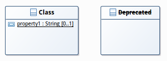
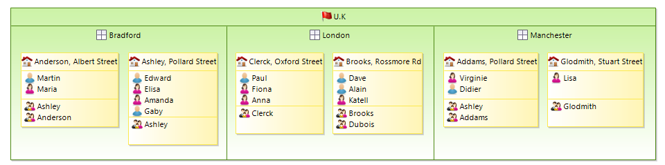
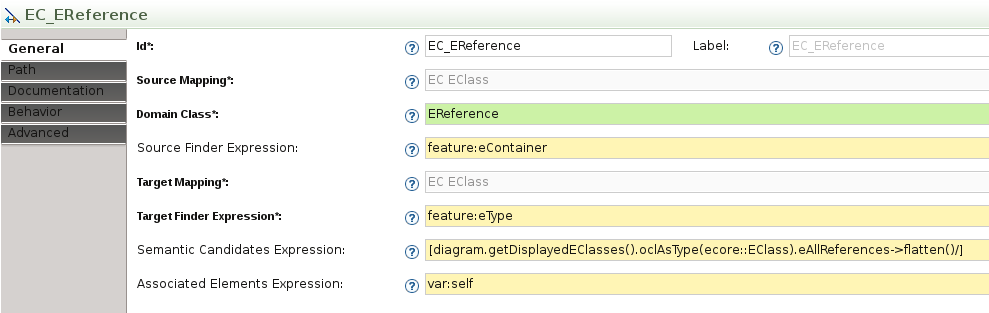
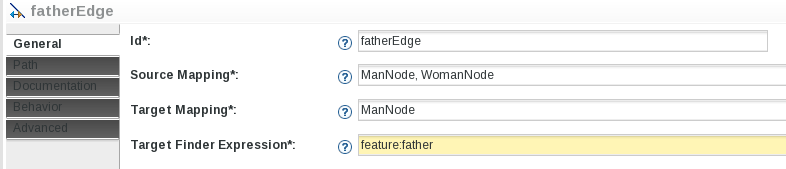
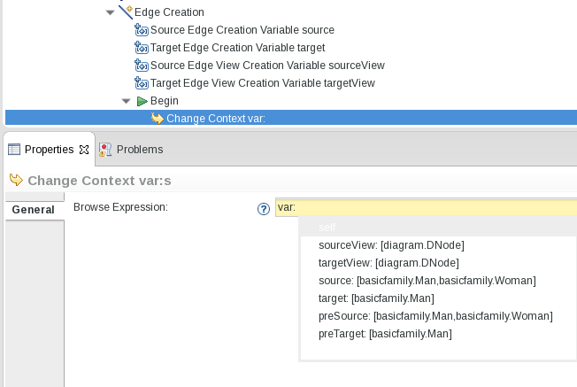
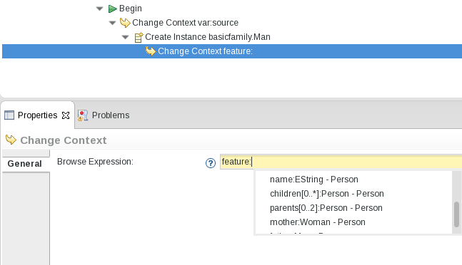
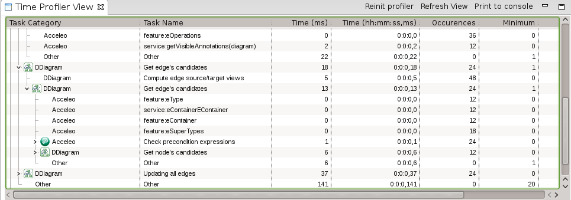
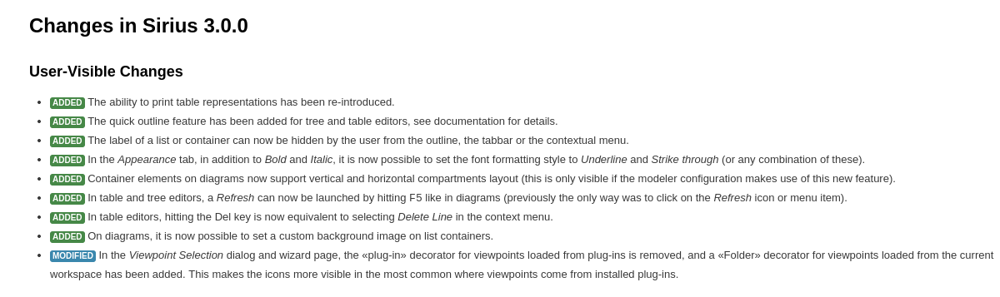

Sirius 3.0
Faster, Stronger and Smarter Diagram Editors
Presented by Cédric Brun / @bruncedric
Slides published at https://cedric.brun.io/talks/

Smarter
Diagram User Experience

Resizing a container(1.0)

Resizing a container(2.0)

Positioning Things

- Snap To Shape enabled by default for new diagrams
- Snap To Grid now used when an element is created
- Resize no longer change ports or children's location
- Actions to distribute shapes
- Action to reset the diagram origin
Edges Layouting (1.0)

Edges Layouting (2.0)

Beautiful editors
Anchor on borders 1.0
Anchor on borders 3.0

Underlined and Strike-through style for labels
Compartments

- Full blown "Mapping"
- dynamic number of comparments
- leverage queries
Freshly painted
- Finishing corner cases/polish for 3.1
- Report weird things on the Bugzilla
Stronger
| Version | Date | Closed | Feature Requests | |
|---|---|---|---|---|
| 1.0.0(Luna) | June 14 | 100 | 2 | |
| 1.0.1 | Aug 14 | 20 | - | |
| 2.0.0 | Oct 14 | 113 | 27 | |
| 2.0.1 | Nov 14 | 2 | - | |
| 2.0.2 | Dec 14 | 15 | - | |
| 2.0.3 | Jan 15 | 16 | - | |
| 2.0.4 | Feb 15 | 8 | - | |
| 2.0.5 | Apr 15 | 8 | - | |
| 3.0.0(Mars) | Jun 14 | 213 | 35 | |
| Total | 426 | 64 | ||
Query languages
What is the type of var:source ?

Type analysis within the Action Language
Requires stronger type information from Interpreters
- Reference support in aql:
- Implemented in feature:, var:
- Improvements in [/]
- No support in legacy <%%> and ocl:
Definition Tooling : demo
- Workspace class loading is BACK
- Image path validation and selection wizard
- Quick Outline
- Prioritized sub menus
- ...
Faster
Goal : 1 Million Model Elements
Constant improvements
| Time (sec) | Heap (Mb) | Time Variation | Heap Variation | |
|---|---|---|---|---|
| Open Huge Project | 80 | 276 | -31,00% | -20,00% |
| Open Big Class Diagram | 11 | 24 | -54,00% | +20,00% |
| Refresh Big Class Diagram | 0,731 | 0 | -18,00% | 0,00% |
| Save After Diagram Change | 26 | 0 | -23,00% | 0,00% |
| Close Diagram | 0,1 | -6 | 0,00% | 0,00% |
| Close Project | 55 | 294 | 0,00% | 0,00% |
Big operations
- Models Footprint, ~20% improvement
- use of MinimalEObject
- Colors transformed from full-blown EObject to Immutable DataType
- detection and correction of leaks
- reduce usage of Adapters
- Save Strategy
- Improvements in the Image cache...
Latency
- Diagram Refresh
- UI Runtime
- Model Element Selection Dialogs for big models
- Right-click latency in the explorer
- Better integration with EEF (property views)
- Tables
- SWT Refreshes now done as a batch
- Table model refresh improvements
Acceleo Query Language
Implementation specifically tailored for the Sirius use case
- Many variables for a given expression
nullvalues are common- Navigation with many steps aggregating data
- Interactive use : context is constantly changing
- Complex or custom logic : Java Services
- Predictable ordering and performance overhead .
Language Characteristics
- You know OCL ? Then you know AQL
- No implicit variables
[name/] is invalid become self.name[self.eContents()->select(name.startsWith('A'))/] is invalid and become self.eContents()->select(i | i.name.startsWith('A')self.referenceWithNoValue.someOtherAttribute has no evaluation error, returns "Nothing" - Classic operations : filter, collect
- Convenient operations : eInverse(), eResource()..
Not strictly compatible* with MTL
*: but a subset of MTL works for both
Queries engines -- Overhead bench

Timeline for AQL
Starting now for deployement in Q4 : consider it
Still using
<%%>
:consider it
Using
[/]
: prepare your queries so that upgrading get easy
Demo

Me too !
- Performances depends on your .odesign specification
- Focus on queries wich would depend on the number of elements in the whole model
- Measure*, Improve, Repeat *: Sirius embedded profiler is one click away
Roadmap
2015/2016
Sirius 3.0 is a major version

Upgrading
- The runtime handles .odesign and .aird models for you
- Easy process :
- Check release notes for user-visible changes. 
- Change update-site, versions
- In case of impacting API change, re-check the release notes for instructions
3.1 is planned for November
- Diagram UX improvements (specify selected elements after a tool application...)
- Compartments feature complete
- Bullet-proof AQL query engine
- More performance and scalability improvements
Potential other themes for 3.1
- Better SVG rendering
- Improve the i18n Story
- Prefered side for ports
Potential Themes for Eclipse Neon
- Customizable rich property views and edition wizards
- Edges from/to list elements
- Tighter integration with the workspace
- Scalability, Performance, Headless
- Your priority
Take Aways
- Sirius : "State of The Art" modeling tools.
- Join the ~15 new authors every month on the Eclipse
- Obeo Designer Community Edition : all in one package

Used Sirius already ?
- Get your entry in the gallery through Bug 448492
SiriusCon @ Paris, December 3rd 2015
TO BE CONTINUED...
Presented by Cédric Brun / @bruncedric
Slides published at https://cedric.brun.io/talks/